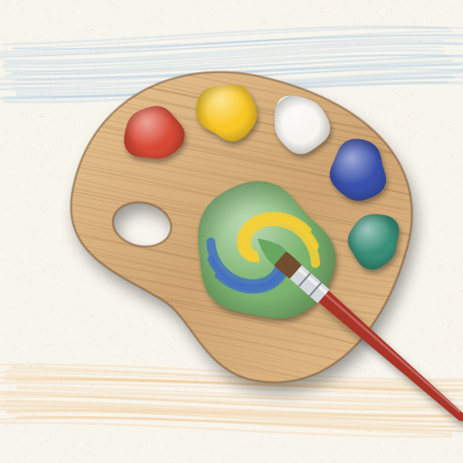

色をまぜる台
手持ちの絵の具で、ほしい色を作る
持っている絵の具・塗料だけで、ほしい色をどう混ぜれば作れるかを出す、iPhone と iPad のアプリです。絵・プラモデルの塗装・工作などの色作りに使えます。
- 絵の具箱で、持っている絵の具に印を付けます（顔料の名前で18本。ない色は、紙に塗って写真を撮ると、自分の絵の具として足せます）
- ほしい色を、写真をさわって取る・色を選ぶ・#数字で入れる、のどれかで決めます
- 1色から3色までの混ぜ方を全部ためして、いちばん近い割合を3つ出します（例「白 4：イエローオーカー 2：バーミリオン 3」）
- ほしい色とのちがいを、「ほぼ同じ・近い・少しちがう・遠い」のことばと数で出します
- 割合を、全部で何 g 作るかに合わせた量に直せます
- パレットで絵の具の山をたたくと1滴ずつ入り、混ざった色がその場で出ます
- 混ぜた色は、光の足し算（RGB の平均）ではなく、絵の具が光を吸う・散らす強さを、光の波長ごとに計算して出します。黄と青で緑になり、反対の色どうしを混ぜるとにごります
- 手持ちの絵の具では届かない色には、「足すなら、この1本」を出します
- 作った色を「作り方の札」（1枚の画像）にして送れます。もらった人は、札の QR をこのアプリで読み取ると、同じ作り方が入ります
- 登録はいりません。絵の具箱と保存した色は、端末の中だけに保存します。課金はありません
作り方は目安です。画面の色と、紙や模型に塗った色は、明かりや絵の具のメーカーでちがって見えます。少しずつ混ぜて、たしかめながら使ってください。